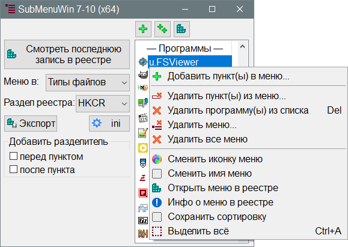

SubMenuWin7_10
Назначение
Создаёт вложенное контекстное меню для файлов

Работа с программой
Кратко: добавить программу, добавить пункт меню из списка.
Создание меню
Если у вас система x64, то используйте SubMenuWin7_10_x64.exe, иначе не будут появляться пункты в субменю.
Кодировка ini-файла должна быть UTF-8 c BOM, иначе не будут видны русские тексты.
Так будет выглядеть меню:

- Добавьте в ini-файл значение параметра SubMenuIcon=C:\Windows\System32\SubMenuWin7_10.ico, и соответственно необходимо скопировать значок по указанному пути, чтобы у субменю сразу была иконка, чтобы не добавлять потом вручную.
- Изначально список программ пуст, поэтому жмём кнопку
 Добавить программу в список, либо перетащить и бросить в окно несколько программ или ярлыков. Тем самым добавляются программы, которые могут быть включены в субменю файла. Из ini-файла берётся Prefix=u. это поможет пометить программы добавленные пользователем и впоследствии показывать только их в списке. Важно: при добавлении программ для "Рабочий стол" выберите его в раскрывающемся списке, чтобы добавляемые программы не имели в командной строке "%1", например, если при добавлении Taskmgr.exe добавиться "%1", то такие программы попросту не будут запускаться.
Добавить программу в список, либо перетащить и бросить в окно несколько программ или ярлыков. Тем самым добавляются программы, которые могут быть включены в субменю файла. Из ini-файла берётся Prefix=u. это поможет пометить программы добавленные пользователем и впоследствии показывать только их в списке. Важно: при добавлении программ для "Рабочий стол" выберите его в раскрывающемся списке, чтобы добавляемые программы не имели в командной строке "%1", например, если при добавлении Taskmgr.exe добавиться "%1", то такие программы попросту не будут запускаться.
- Кликаем программу в списке, появляется поле ввода типа файла, например "txt", если жмём "ОК", то создаём первый пункт меню для "txt"
- В раскрывающемся списке можно выбрать, чтобы добавлять меню для дисков, папок, рабочего стола (он же папка на пустом пространстве)
- В связи с улучшением автоматизации, теперь импортировать список программ можно из ini-файла. Можно самостоятельно добавить пути популярных программ, а алгоритм добавит только существующие программы. Аналогично добавлять пункты меню теперь проще выделив несколько программ и при нажатии Добавить пункты меню указать через пробел или через запятую несколько расширений, чтобы добавить выбранное сразу для указанных расширений. А также можно указать группу файлов из ini-файла, например =архив. Группы можно создать самостоятельно по примеру уже готовых вариантов.
Назначение кнопок
 Показать список в реестре - открывает ветку реестра со списком программ.
Показать список в реестре - открывает ветку реестра со списком программ.
Смотреть последнюю запись в реестре, её можно нажать после добавления пункта меню, чтобы контролировать происходящее, изменить порядок пунктов вручную.
Экспорт - экспортирует данные реестра, т.е. узлы-программы и меню в классах расширений, ищет разделы "OpenActions" и экспортирует эти данные.
ini - открывает ini-файл, чтобы изменить какие либо настройки.
Выбор меню
Типы файлов - при выборе этого пункта меню добавляется для определённых расширений файлов или для группы, например текстовых. При добавлении пункта будет запрос расширения, вводим в поле ввода например txt, или список расширений, например mp3,wav,ogg, также можно указать группы в виде "=текст" без кавычек, при этом в ini-файле должна быть группа "текст=txt,log" и т.д., то есть список заготовленных расширений.
Все файлы * - это добавляет меню для любого типа файла (программы копирования, бэкапирования и т.д.).
Диск - меню дисков (добавляем сюда утилиты по работе с дисками: ChkDskGui, Scanner и т.д.)
Папка - меню папки (добавляем сюда файловые менеджеры и анализаторы папок: FileSizesList, Scanner, Q-Dir)
Рабочий стол - меню рабочего стола и пустого поля папки (добавляем сюда диспетчер задач)
Неизвестный файл - для неассоциированных файлов с ProgID=Unknown (добавляем сюда бинарный просмотрщик HxD)
Выбор HKCR, HKCU, HKLM
HKCR - это зеркало HKCU\Software\Classes и HKLM\SOFTWARE\Classes. То есть, если в реестре уже будет добавлено меню в один из разделов HKCU или HKLM, то соответственно пункты будут добавляться в существующее меню этих разделов. Если меню есть в обоих разделах, то добавляться будет в приоритетное - для текущего пользователя.
HKCU - для текущего пользователя.
HKLM - для всех пользователей.
Контекстное меню

Правый клик мыши на пунктах в списке программ открывает контекстное меню:
Добавить пункты меню - Добавляет выбранные пункты меню для расширения файла или группы расширений.
Удалить пункт(ы) из меню... - если создано субменю с некоторым набором программ, то можно удалить выбранную из уже добавленных в субменю.
 Удалить программу(ы) из списка - удаляет программу в реестре и в списке, она становится недоступной для добавления в меню.
Удалить программу(ы) из списка - удаляет программу в реестре и в списке, она становится недоступной для добавления в меню.
Удалить меню... - удаляет субменю полностью, т.е. раздел реестра OpenActions (если задано это имя по умолчанию)
Удалить все меню - удаляет все субменю полностью, т.е. всё что создала программа (кроме программ списка, которые удаляются пунктом Удалить программу(ы) из списка).
 Сменить иконку меню - заменяет иконку меню, что указана в ini-файле в параметре SubMenuIcon=путь
Сменить иконку меню - заменяет иконку меню, что указана в ini-файле в параметре SubMenuIcon=путь
Сменить имя меню - заменяет имя меню, что указана в ini-файле в параметре MenuName=Действия
Открыть меню в реестре - покажет диалоговое окно для ввода расширения файла и откроет этот меню в реестре.
Инфо о меню в реестре - найдёт все меню в реестре и покажет ProgID, для которых они прописаны, например "txtfile" это ProgID для всех ассоциированных с блокнотом текстовых файлов.
Сохранить сортировку - создает файл SubMenuWin7_10_Sort.ini (см. далее что с ним делать)
Выделить всё - выделяет весь список программ для последующих действий (удалить).
Сортировка
Чтобы программы добавлялись в меню в нужном порядке необходимо задать порядок в файле SubMenuWin7_10_Sort.ini (в комплекте есть пример). Если этого файла не существует, то сортировка в алфавитном порядке, а точнее в том виде, в котором записи расположены в реестре. При выборе нескольких пунктов они будут добавляться в меню в том же порядке, а значит порядок в списке повторяется и в меню. Можно сортировать изменив имена разделов, например экспортировать данные и поставить префиксы, например u.1_AIMP, но делать это необходимо до создания меню в реестре.
Чтобы получить список программ нужно использовать пункт "Сохранить сортировку", открыть этот файл и задать свой порядок.
Добавить разделитель
При добавлении пунктов меню между ними можно сделать разделительную линию, группируя пункты по каким либо критериям. Например между обычными редакторами и редакторами программирования, или между видео и аудио проигрывателями для аудио файлов.
Параметры ini-файла
[set] ; секция параметров
Prefix = u ; префикс для добавляемых программ, чтобы отображать в списке только узлы-программы добавленные этой программой
ActionsName = OpenActions ; имя раздела реестра для пунктов меню
MenuName = Действия ; имя субменю отображаемое в контекстном меню. Можно например "Открыть в", "Программы" и т.д.
SubMenuIcon = C:\Windows\System32\SubMenuWin7_10.ico ; путь к иконке субменю отображаемого в контекстном меню. Если не задано или путь неверный, то иконка не будет отображаться. Можно задать EXE или DLL-файл с указанием номера иконки, например cmd.exe,0 (или с полным путём). Если путь с пробелом, то заключить в кавычки.
NoMultiMB = 1 ; при пакетном добавлении в несколько расширений файлов не показывать сообщения, так как их может оказаться до 100 шт.
AskName = 0 ; спрашивать у пользователя имя добавляемого пункта меню, это позволяет делать русское понятное название пункта.
SelType = 0 ; Сохранение выбора в какое меню добавить.
SelReg = 0 ; Сохранение выбора в какой раздел реестра записывать.
RegProg = путь ; для использования стороннего менеджера реестра (путь не заключать в кавычки).
Секция [types] содержит группы расширений, который можно указывать при добавлении/удалении пунктов меню, указав всего лишь =архив или =музыка и т.д.
Секция [paths] содержит пути к программам, которые можно импортировать в реестр одним кликом.